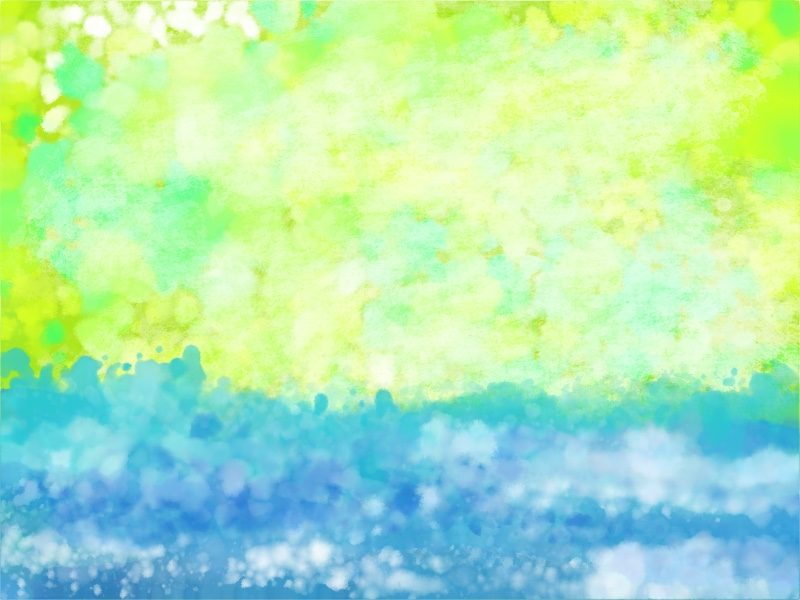

休むってなに。
生きる真面目で頑張り屋で考えが極端で偏ってる。自分はそうだと思う。
休むのが苦手だ。
休むってなに。
気づくと溺れてる。
溺れてる人に「力を抜いて、そうすれば体が浮くから。楽になるよ。」と言ったところで。
溺れて水を飲み込んで体が沈んでもがいてるんだから、体の力抜けるわけない。体の力抜いたら死ぬかもしれない。
そんな状態が続いてるわけで。
休むってなに。
大体休むと出てくる罪悪感はなんなのか。
「みんなは頑張ってるのに」「私は何も出来ないのか」「こんなぐうたらしてていいのか」「休んでる自分なんてダメ人間じゃないのか」
ほら、考えが極端で偏ってる。強迫観念みたい。休むな、頑張れ、動き続けろ。
壊れたのに壊れたまま頑張ってる。ボロボロのまま走ってる。
尖った針の上を歩いてるような危うさ。痛み。
これが鬱期。私の鬱期。
休むってなに。
無理しないで休んでねってなに。
家にいて何もしなくていいよ、でも休めないんだよ。焦ってる。責めてる。何したらいいのかわからないし、何がしたいのかもわからない。
楽しいことなんだっけ。動画も映画も本も好きだったものもどうでもいい。集中力もない。
症状のせい。鬱期が来る病気。希死念慮も死にたいわけじゃなくて、そうなっちゃう症状。
どう過ごせばいいんでしょう。
とにかく負担は減らしてもらう。なるべく。でも何もしないと自責の念に襲われるのでなにか小さな一つだけやる。生活のレベルは下げる。冷凍食品でもいい。風呂は入れなくてもいい。体洗えなくてシャワーかけるだけでもいい。
あとはとにかく寝る。眠れないけど眠くなったときに今だ！って寝る。
何もないけど何もないけどとりあえずなんか、とりあえずなんかないかな。
ぐるぐる考えをノートに書き出す。
休むってなに。